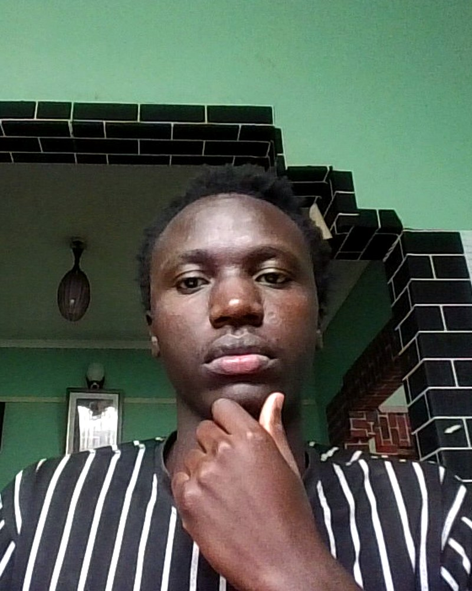

Software developer, Eldoret, Kenya
Jackson Omondi Mula
I build web and Android software for everyday Kenyan problems: running a garage, taking part in policy, renting a car, finding a matatu fare.

- Studying
- Information Technology, Kabarak University. Third year, graduating December 2027.
- Working at
- County Government of Uasin Gishu, ICT department, on attachment.
- Building with
- React, Next.js, Node.js, Kotlin, PostgreSQL and MySQL.
About
I’m a third-year IT student at Kabarak University who likes turning a messy real-world process into software people can actually use. I’m comfortable on both sides of an application: React and TypeScript on the front, Node.js, PHP and REST APIs on the back, and Kotlin when the product needs to live on a phone.
My recent work includes an Android app for garage management, an AI-assisted portal that makes government policy documents easier for citizens to read, and a car rental platform with an owner dashboard. I’ve also integrated M-Pesa payments through the Daraja API.
Outside code, I follow hip-hop, sneakers and the gold market.
Selected projects
-
Makanika
Android app, in development
A Kotlin app for a multi-tenant garage and vehicle service system. Staff sign in as admin, front desk or mechanic, then open job cards that show a work order’s services and move it through its status workflow.
-
CivicAI (Sauti ya Wananchi)
Team project, Kabarak University
An accessible public participation portal that helps Kenyans read and respond to government policy documents, using AI to explain them and text-to-speech to make them available to more people.
-
Car Rental
Web app
A car rental site where customers browse cars and manage their bookings, and owners use a separate dashboard to add cars, manage listings and handle booking requests.
-
Project-Mgt
Full-stack monorepo
A project management app with a React client, Clerk authentication and background jobs, deployed to Vercel.
View on GitHub -
MatuTrack
Design and proposal
A web platform concept for matatu routes and fares, complete with a project proposal, entity relationship diagram, interactive wireframes and a presentation deck.
-
M-Pesa STK Push integration
Payments backend
A Node.js and Express service that triggers M-Pesa payment prompts through Safaricom’s Daraja API, built for a campus marketplace concept.
Experience and education
-
ICT attachee
County Government of Uasin Gishu
Software-focused attachment in the ICT department, exploring data and reporting tools for county work.
-
Information Technology
Kabarak University
Third year. Coursework includes Distributed Systems, Software Engineering, Software Quality Engineering, Advanced Internet Programming, Software Project Management and Management Information Systems.
Skills
Frontend
Backend
Mobile
Data
Tools and services
Integrations
Let’s work together
I’m open to internships, attachments, junior developer roles and freelance projects. Send me a short note about what you’re building.
your.email@example.com